GRAPHS Homework
Total Points = 134
-
(8 points) Draw the acquaintanceship graph that represents that Tom and Patricia, Tom and Hope, Tom and Sandy, Tom and Amy,
Tom and Marika, Jeff and Patricia, Jeff and Mary, Patricia and Hope, Amy and Hope, Amy and Marika know each other,
but none of the other pairs of people listed know each other.
- Given the following undirected graph.
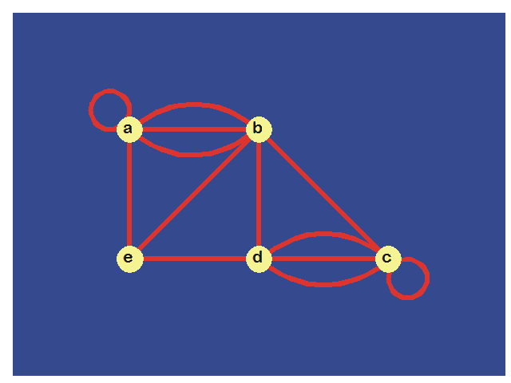
-
(8 points) Find the number of vertices, the number of edges, and the degree of each vertex.
Identify all isolated and pendant vertices.
-
(2 points) Find the sum of the degrees of the vertices and verify that it equals twice the number of edges in the graph.
-
(6 points) Determine the number of vertices and edges and find the indegree and outdegree of each vertex of the given directed
multigraph.
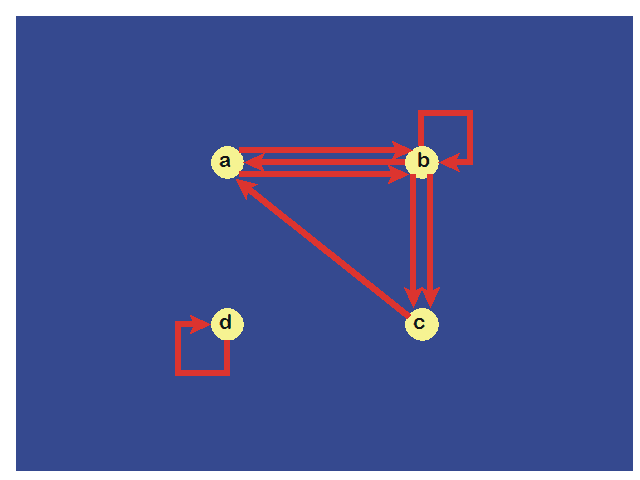
- (10 points) Draw the following graphs.
- C7
- K7
- W7
- K4,4
- K1,8
-
Suppose that there are five young women and six young men on an island.
Each woman is willing to marry some of the men on island and each man is willing to marry any woman who is willing
to marry him.
Suppose that Anna is willing to marry Jason, Larry, and Matt;
Barbara is willing to marry Kevin and Larry;
Carol is willing to marry Jason, Nick, and Oscar;
Diane is willing to marry Jason, Larry, Nick, and Oscar;
Elizabeth is willing to marry Jason and Matt.
- (8 points) Model the possible marriages on the island using a bipartite graph.
-
(2 points) Find a matching of the young women and the young men on the island such that each young woman is matched with
a young man whom she is willing to marry.
-
(4 points) Find the union of the given pair of simple graphs assuming edges with the same endpoints are the same.
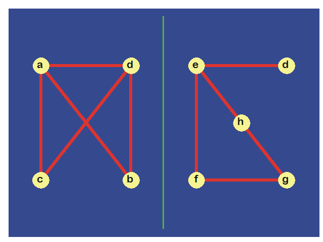
- (12 points) Represent the given digraph with an adjacency list, an adjacency matrix and an incidence matrix.
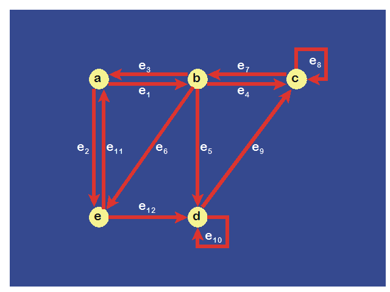
- (16 points) Determine if the following graphs are isomorphic.
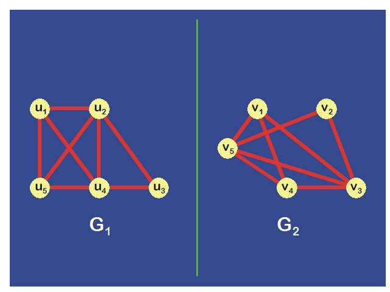
- (12 points) Find the number of paths between each pair of vertices in the given graph of length 2 and length 3. You must show your work!
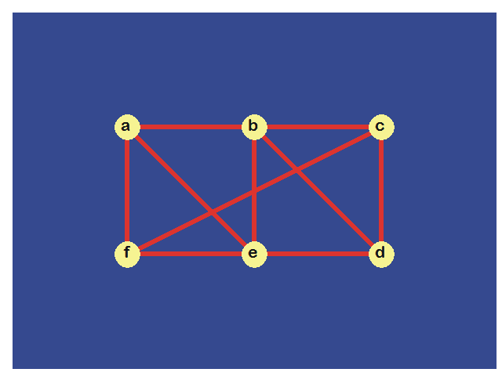
-
(10 points) Show that every connected graph with n vertices has at least n – 1 edges that is not a loop.
- (8 points) Can someone cross all the bridges shown in the map below exactly once and return to the starting point? Why or why not?
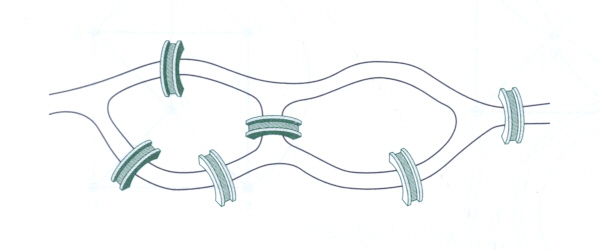
-
(8 points) Determine if the given digraph has an Euler circuit from node a returning to node a and construct such a circuit if one exists.
If no Euler circuit exists, determine if the graph has an Euler path and construct such a path if one exists.
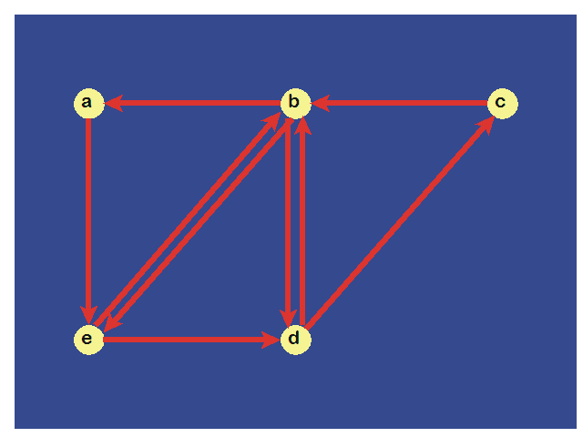
- (6 points) Given the graphs below
- Find the shortage route and preferably with the least connections between Los Angeles and Boston.
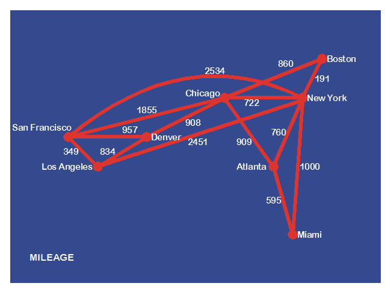
- Find the fastest route between Los Angeles and Boston.
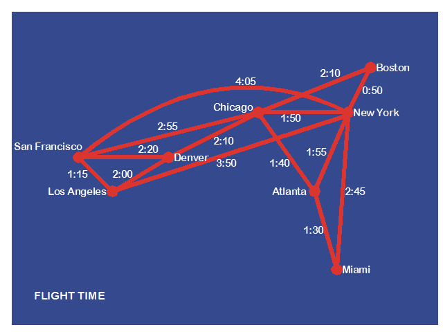
- Find the cheapest route between Los Angeles and Boston.
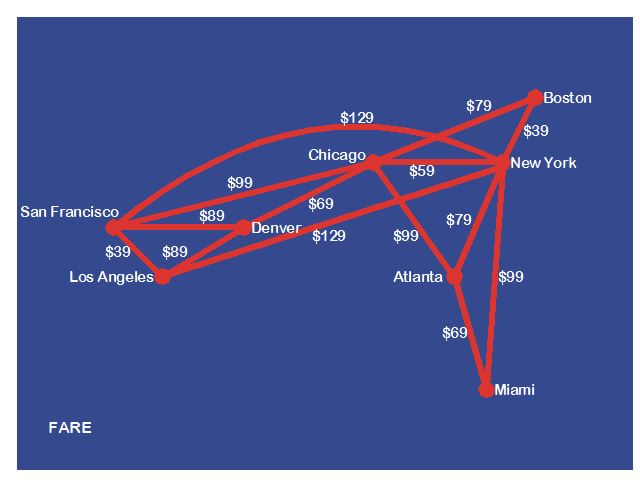
-
(10 points) Solve the traveling salesman problem for the given graph by finding all Hamiltonian circuits beginning at node a and returning to node a with minimum total weight. (Hint: the minimum total weight is 20.)
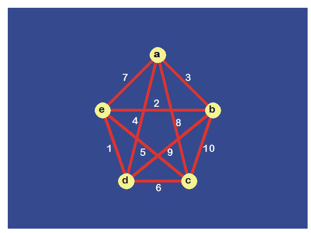
- (4 points) Determine whether the given graph is planar, and if it is, draw it so that no edges cross.
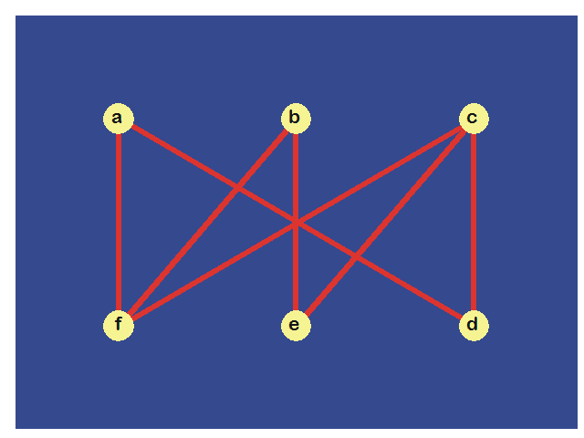
Solutions to Homework on Graphs
(to be posted after the due date)
© 2002-09-13 rcm27 ; last update
2021-05-15 0:53